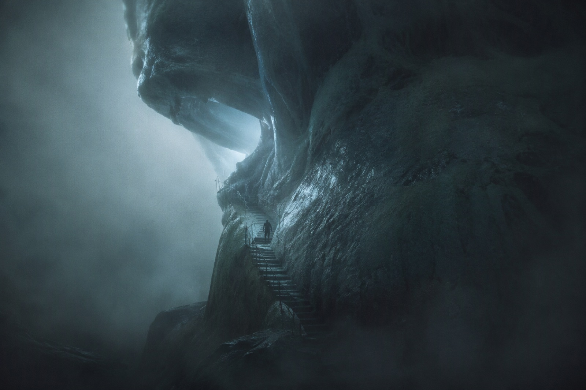
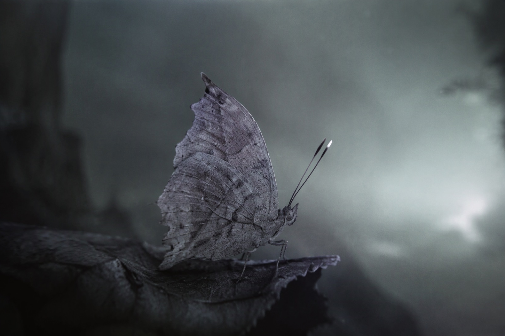

致 梦境探索者未署名
A COMMISSION WITHOUT A NAME
委 托 函
“哪一道门，
能让回忆之后的时间继续？”
委托事项入梦。查证。带回证据。
交付期限今夜
约定报酬一段遗失的过去
夹在你正读到的那一页
别再查了。
委托人
落款是空的。页边那句话，却是你的笔迹。
01 / THE COMMISSION
有些问题，只有梦知道答案。无署名委托 · 故事的起点
桌上那本书，你翻过很多次。
这一次，里面夹着一封信：一件委托、一个期限，
和一个不许追问的问题。
报酬不是钱。
是一段你确实丢掉的过去。
你是无名梦境探索者，不是梦的主人。
你的任务：查明真相，带回证据，真正醒来。
A COMMISSION WITHOUT A NAME
“哪一道门，
能让回忆之后的时间继续？”
委托事项入梦。查证。带回证据。
交付期限今夜
约定报酬一段遗失的过去
夹在你正读到的那一页
别再查了。
落款是空的。页边那句话，却是你的笔迹。
THE DREAM DOES NOT IMPRISON YOU
它给你一段更完整的过去，一个几乎合适的名字。
所有东西，都在替你圆一个说法。
02 / THE OTHER SIDE
不合情理，却无比熟悉。巨物改变你的去路。重复悄悄建立规律。
近处的一切都可信，合起来却不可能。
三个代表性梦域，不是每夜固定的顺序。
“他们叫出了一个你没听过的称呼，
然后，等你纠正。”
巨根截断近路，林庭与水声重复。一间从外侧数步可绕完的林屋，内部却容纳漫长庭院。
核对尺度与时序。记住蝶停下的接缝，判断这段林庭是否已经重复过。
一处接缝，不是一个答案。
相似的门拱，不足以证明你回到了原处。把重复记下，再核对水位与行走的时间。
概念交互示意，非实机解谜。03 / NOT JUST A WITNESS
电影般的世界，由你亲自介入。身体进入世界，观察形成假设，证据改变路径。
不是孤立的谜题房，也不以战斗数量定义冒险。
以下为玩法设计方向，待可玩切片验证。

THE BODY IS YOUR FIRST WITNESS原创概念图（AI 生成）· 非实机让身体，成为第一份证据。
亲历，而非旁观
攀越巨根，游渡水隙，借势滑行。在持续运动的巨构间寻找落点，从内外两侧核对同一空间。远处的一条纹理，可能只有走近才读得成证据。
行走 / 攀越 / 游渡 / 失重穿行04 / THE SILENT WITNESS
唯一贯穿所有梦的活物。
LEAF MIMICRY焦点在蝶。它像一片叶子，但这不是全部。
调焦与线迹为网页概念演绎，不是图片中已证实的线索。OBSERVE. DO NOT FOLLOW.
它总比门先出现，却从不替你说话。
它停下的位置，可能是破绽，也可能是邀请。
先记录，再判断。
蝶停下的位置要先记录，再判断门后去向。
看不清的边界，正是梦可以替你补写的地方。
它证明有东西越过边界，不证明全部记忆为真。
THE WAY OUT IS REAL. SO IS THE COST.
醒来不是最后一次反转。
你打开的出口必须成立，亲手查证的事实不会被撤销。
时间继续。缺口也在。
你已经核对了留下的记录。时间继续，事实没有被撤销。
概念开发中 · 暂无试玩及发售日期“周与胡蝶，则必有分矣。此之谓物化。”——《庄子·齐物论》回到序章